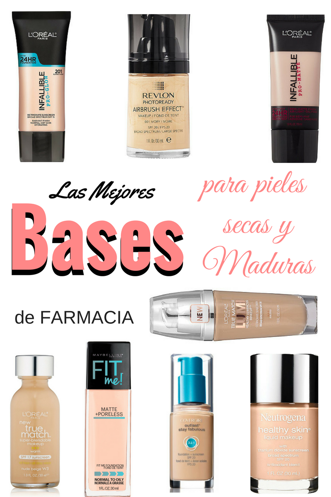

¡Hola amantes del maquillaje! 💄
Descubre los productos de maquillaje perfectos para pieles secas y logra un rostro hidratado y resplandeciente con elegancia. 💧✨
1. Base de Maquillaje Hidratante 🌈
Elige bases de maquillaje diseñadas para pieles secas. Busca fórmulas hidratantes que proporcionen una cobertura uniforme y un acabado luminoso. Opta por productos que contengan ingredientes nutritivos. 💖
2. Corrector Cremoso para Hidratación Adicional 🌟
Utiliza correctores cremosos para hidratar y corregir imperfecciones. Estos productos son ideales para pieles secas y ayudarán a mantener la zona del contorno de ojos nutrida. 👌
3. Rubores en Crema para un Toque Fresco 🚀
Opta por rubores en crema para un aspecto fresco y natural. Estos productos aportarán un toque de color mientras mantienen la hidratación en tus mejillas. 🌿
4. Sombras de Ojos Hidratantes 👁️
Selecciona sombras de ojos en crema o fórmulas hidratantes para evitar la sequedad en los párpados. Estos productos darán luminosidad a tus ojos y se aplicarán suavemente. 🎨
5. Labiales con Ingredientes Nutritivos 💄
Elige labiales enriquecidos con ingredientes nutritivos como aceites y mantecas. Estos productos proporcionarán hidratación a tus labios, evitando la descamación. 🌈
6. Spray Hidratante para Fijar el Maquillaje 🌈
Completa tu rutina con un spray hidratante para fijar el maquillaje. Esto ayudará a mantener la hidratación a lo largo del día y proporcionará un acabado fresco. 🚀
¡Y ahí lo tienes! Con estos productos de maquillaje, podrás cuidar y resaltar la belleza de tu piel seca. ¡Brilla con elegancia en cada ocasión! 💧✨